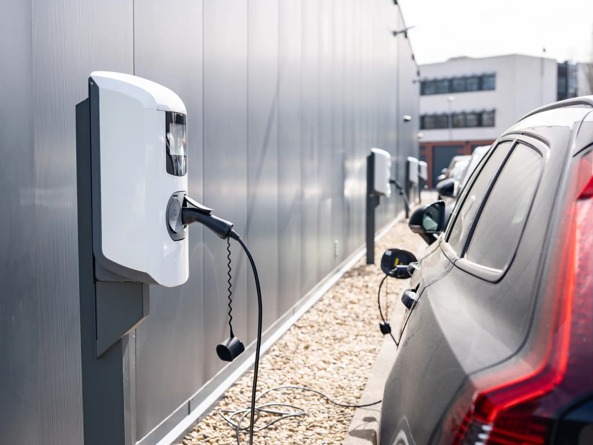
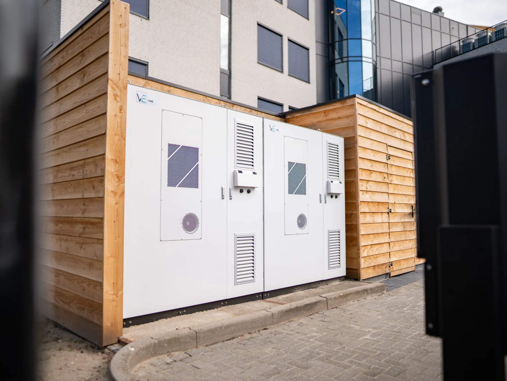
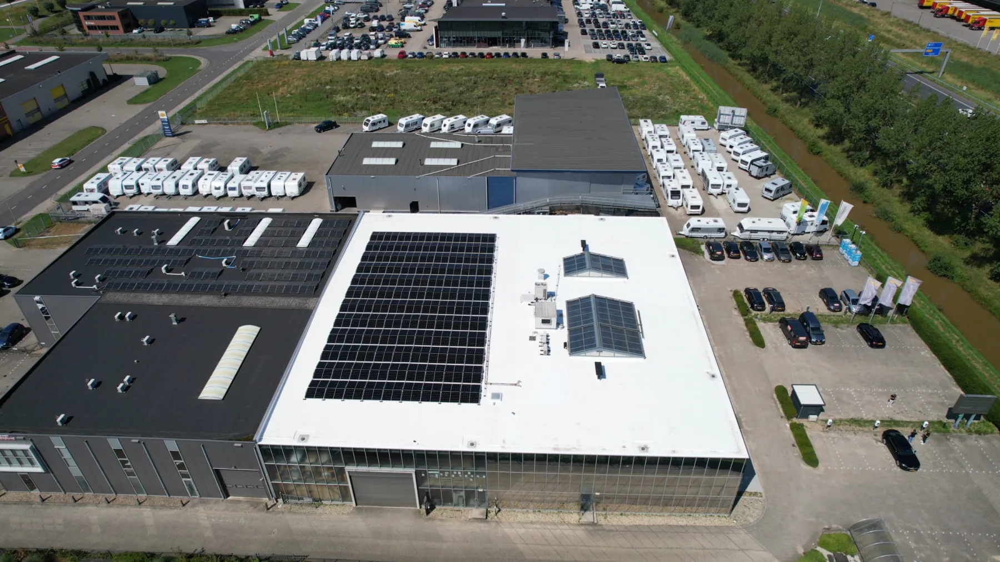

Meer laadpunten op het vermogen dat er al is.
Laadpunten bijplaatsen loopt zelden vast op de laders zelf, maar op het vermogen dat de aansluiting op het drukste moment kan leveren. Wie dat vermogen gestuurd verdeelt in plaats van optelt, kan laadpunten toevoegen zonder de aansluiting te verzwaren.
Laadvermogen is een verdeelvraagstuk.
Het aantal laadpunten dat op uw terrein past, wordt niet bepaald door het vermogen van de laders bij elkaar opgeteld, maar door wat er overblijft naast het gebouw — en door hoe strak dat restant wordt verdeeld.
Prioriteit ligt vast
De bedrijfsvoering gaat voor. Pas wat het gebouw op dat moment niet nodig heeft, komt beschikbaar voor de laadpunten. Laden schaalt terug voordat er aan het proces wordt geraakt.
Dynamische lastverdeling
De lastverdeling verdeelt het beschikbare vermogen over de laadpunten en stelt dat continu bij. Staan er veel voertuigen aan de laders, dan laadt iedereen rustiger; is het rustig op het terrein, dan gaat de volle ruimte naar wie er staat.
Buffer achter de meter
Een batterij vangt de gelijktijdigheid op. Daarmee kan het laadplein op piekmomenten vermogen leveren dat de aansluiting op datzelfde moment niet heeft.

Een laadplein is geen rij palen. Het is de capaciteit van het hele terrein.
Wat er aan laadpunten bij kan, volgt uit het terrein als geheel: de aansluiting, de vraag van het gebouw, de opwek op het dak en de buffer die daartussen staat. Pas wanneer die onder dezelfde regelaar hangen, valt het beschikbare vermogen echt te verdelen.

Laden, opwek en opslag op hetzelfde terrein. Hoe meer daarvan onder dezelfde regelaar hangt, hoe meer laadpunten er binnen de bestaande aansluiting passen.
Over het samenspel op locatieHet plafond staat vast. De verdeling eronder niet.
De aansluiting is de harde grens, en die blijft onaangetast. Daaronder is bijna alles regelbaar: wie laadt, hoe snel, en op welk moment. Waar die ruimte tekortschiet, vult de buffer achter de meter het verschil aan.
De afname wordt gemeten, niet geschat
De regelaar leest de werkelijke afname op de aansluiting en weet daarmee wat het gebouw op dat moment vraagt. Dat is het vertrekpunt van elke verdeling.
Het restvermogen gaat naar de laadpunten
Wat overblijft wordt over de actieve sessies verdeeld, en opnieuw verdeeld zodra er een voertuig bijkomt of vertrekt. Een laadpunt krijgt dus nooit vermogen dat er niet is.
Vertrektijd bepaalt de volgorde
Voertuigen die het langst blijven staan, laden het rustigst. Wat als eerste weg moet, krijgt voorrang — zonder dat de rest stilvalt.

De buffer die het laadplein ondersteunt, staat buiten in een eigen omkasting. Over energieopslag
Schematische weergave van de verdeling tussen gebouwlast en laadvermogen. Geen meetdata van een bestaande installatie.
Het laadplein beweegt mee. Het proces niet.
Loopt de gebouwlast op, dan krimpt het laadvermogen mee en blijft de afname onder de grens die voor uw aansluiting geldt. Zakt de last weg, dan groeit de laadruimte vanzelf terug. De gebruiker merkt daar weinig van: wie lang genoeg staat, vertrekt met een volle accu, ook als het laden tussendoor is teruggeschaald.
De laadpunten werken op de open OCPP-standaard. De sturing blijft daarmee los van de laadpassen: u bent vrij om aan een externe laadpasaanbieder te koppelen, en om die keuze later te herzien.
Over VIBE.CONTROLGerealiseerd binnen de aansluiting die er lag.
Locaties waar laadpunten zijn bijgeplaatst zonder dat de netaansluiting is verzwaard.
Ratio 16, Duiven.
Zon, opslag en een laadplein op hetzelfde terrein, opgeleverd in juli 2024 — binnen een transportvermogen dat ongewijzigd bleef.

Hedin Amsterdam
20 laadplekken en 460 kWh batterijopslag binnen een bestaande aansluiting van 215 kW. In vier weken gerealiseerd.
Amsterdam · maart 2026
Hedin Alkmaar
Energieopslag van 300 kW, in vier dagen geïnstalleerd. Daarmee kwam er ruimte vrij voor laden binnen dezelfde aansluiting.
Alkmaar · mei 2025
Goed om te weten.
Kunnen wij laadpunten bijplaatsen zonder netverzwaring?
Vaak wel. Door het beschikbare vermogen dynamisch te verdelen en waar nodig een buffer achter de meter te zetten, is er meer te laden dan de aansluiting op piekmomenten zou toestaan — zonder die aansluiting te overschrijden. Bij Ratio 16 in Duiven kwam er zo een laadplein van 132 kW met 12 laadplekken bij, terwijl het transportvermogen van 51 kW ongewijzigd bleef. Wat er op úw locatie past, volgt uit uw kwartiersprofiel.
Wanneer kiezen we AC en wanneer DC?
AC-laden past bij voertuigen die lang stilstaan: personeel en bezoek. DC-snelladen is bedoeld voor de vloot en voor zwaarder materieel, dat tussen ritten door snel bij moet laden. De meeste terreinen krijgen een combinatie, waarbij de verdeling volgt uit hoe lang voertuigen er daadwerkelijk staan.
Zitten wij vast aan uw laadpassen?
Nee. De laadpunten werken op de open OCPP-standaard en zijn vrij koppelbaar aan een externe laadpasaanbieder. U kiest zelf bij wie u de laadsessies en de afrekening onderbrengt, en u kunt daar later op terugkomen.
Wat gebeurt er als alle laadpunten tegelijk in gebruik zijn?
Dan verdeelt de lastverdeling het beschikbare vermogen over de actieve sessies, in plaats van ze allemaal op vol vermogen te laten trekken. Niemand valt uit; het laden duurt alleen langer. Zodra er een voertuig vertrekt, komt die ruimte direct bij de overige sessies terecht.
Hoe lang duurt de realisatie?
Dat hangt af van de omvang, de aanleg op het terrein en de vergunningen. Ter illustratie: bij Hedin Alkmaar stond de energieopslag in vier dagen, bij Hedin Amsterdam was het complete systeem in vier weken gerealiseerd. Voor uw locatie geven wij pas een doorlooptijd af na de analyse.
Hoeveel laadpunten passen er op uw aansluiting?
Stuur ons uw aansluitgegevens, kwartierdata en de plannen voor uw wagenpark. Wij rekenen door hoeveel laadvermogen er binnen de bestaande aansluiting te realiseren is, en wat een buffer daaraan toevoegt.
Vrijblijvend. Wij reageren op werkdagen.